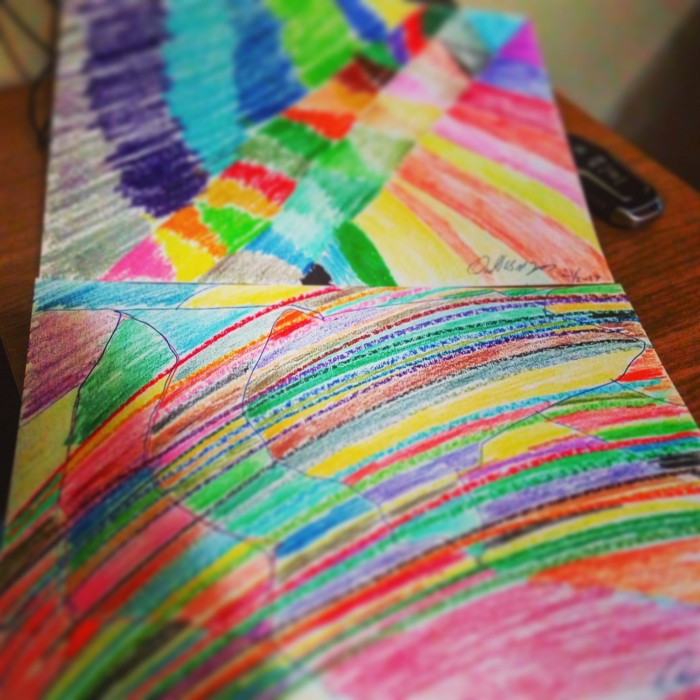

«One Time Enjoyment», eller kort sagt «OTE». ER ALT KUNST! «EA»!

Alt er som kunst = «Everything Art» (EA). Alt vi nyter som en engangsopplevelse — «One Time Enjoyment» (OTE) — kan vi betrakte som å nyte et øyeblikk slik vi nyter et kunstmaleri. Hør på meg: Når du nyter et godt glass vin, kan du også lytte til en fin sang du liker. Både sangen og vinen kan betraktes som en engangsopplevelse. Du nyter den én gang i noen minutter, slik du ville gjort med et kunstverk i et galleri.
Jeg kaller det «One Time Enjoyment» (OTE). Det er alt du gjør i noen minutter, så lenge det er noe du regner som en av favorittingene dine — eller som kan bli det; du må bare prøve det først.
Som med all slags kunst må du prøve den før du kan nyte den. Det samme gjelder alt som har mulighet til å bli en favoritt, enten det er en ny sang eller en ny vin.
Jeg liker å se på hver nye sang som et nytt maleri, et nytt kunstverk som er blitt laget. Om jeg liker det eller ikke, er opp til min egen smak.
Du kan skape det selv. Gjør det som en gatekunstner, gjør det som Banksy eller Shepard Fairey. Sett det på en vegg, sett opp ideene dine, la din kreative selvbevissthet komme til uttrykk på store papp-plater. Skriv, tegn eller design, og lim det deretter på veggen. Gjør det lite, middels eller stort — det er opp til deg, velg selv....... #OTE!
Finn kunst i alt (#EA), og gjør det til en «One Time Enjoyment» (OTE) med alt du kan. GJØR DET #OTE!